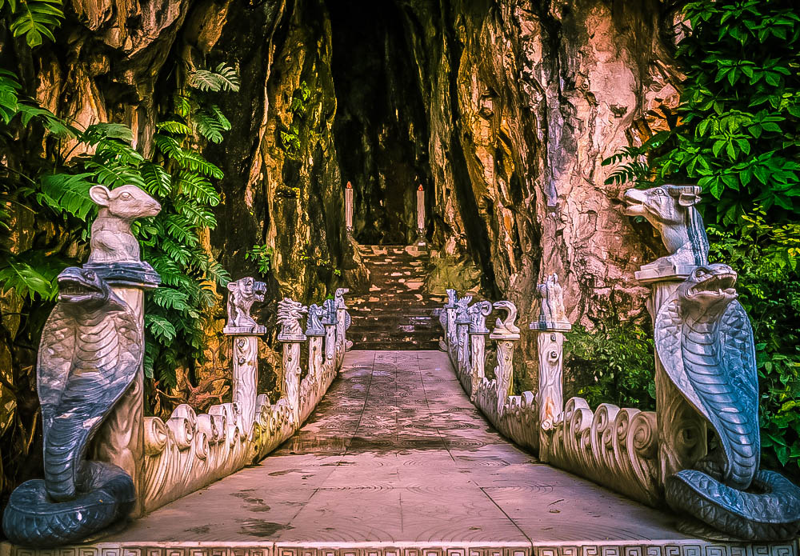

Động Âm Phủ nằm ở phía nam Thủy sơn du khách vào thăm hang động nầy thấy thiếu ánh sáng mặt trời. Càng đi vào sâu càng tối tăm hơn, nên có tên là Âm phủ có người nói rằng nếu đem những trái bưởi có đánh dấu bỏ vào đó mấy ngày sau sẽ thấy trôi ra biển có thể động nầy ăn thông ra biển.